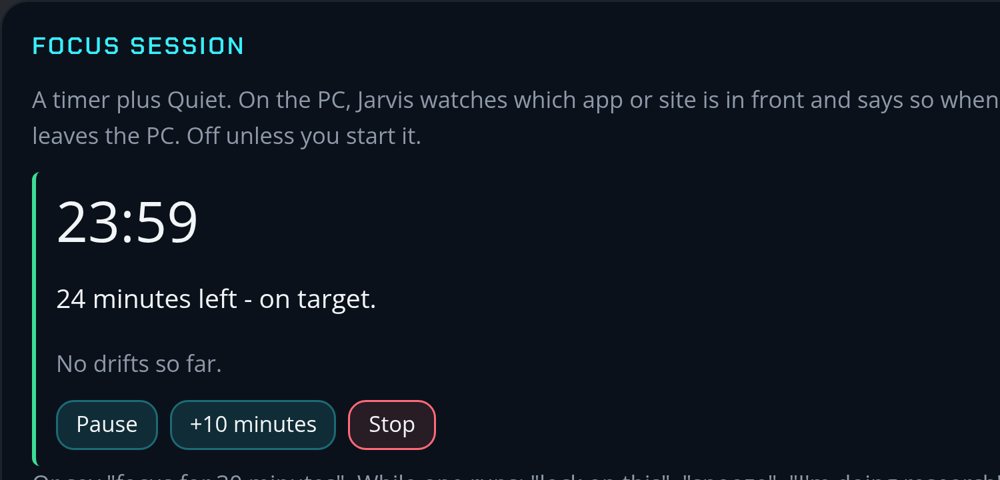
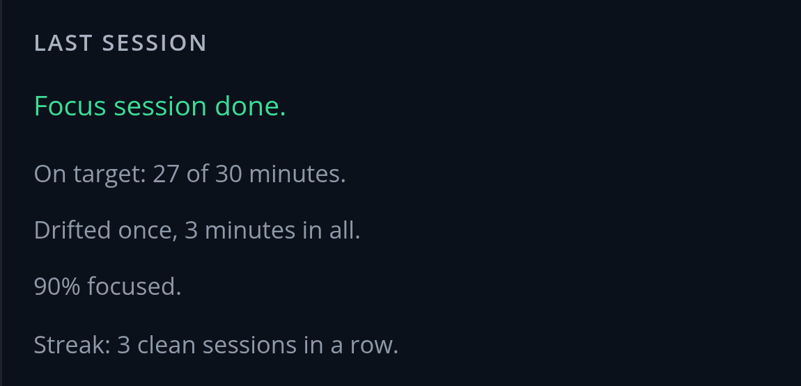
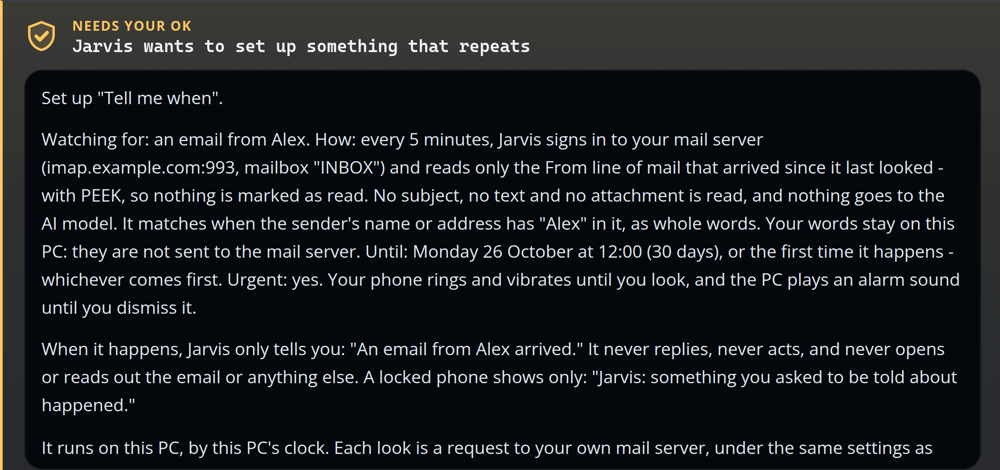
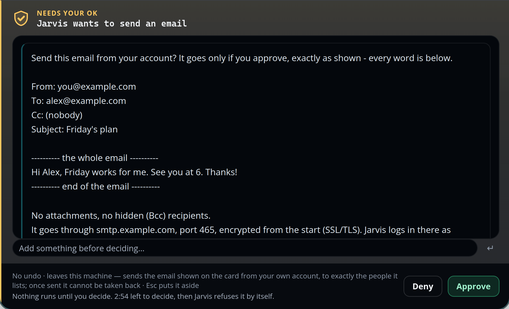
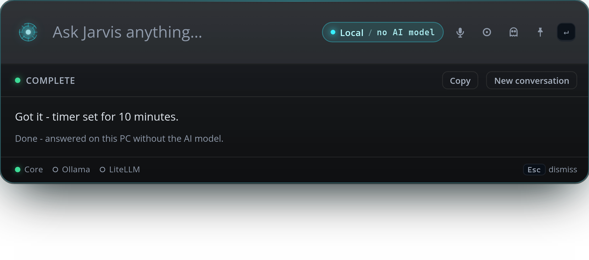
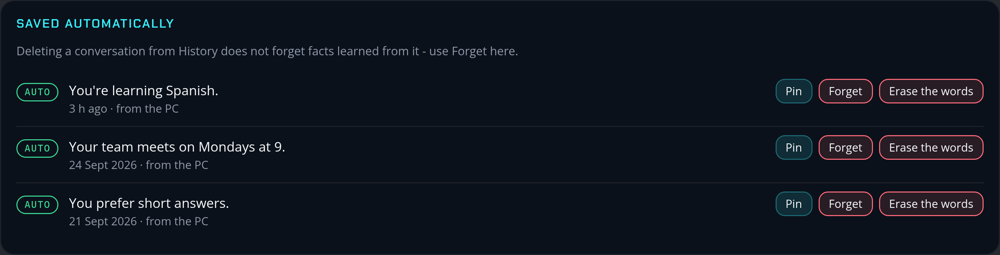
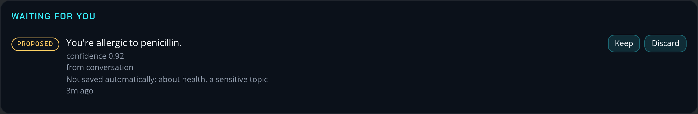

LOCAL AI MODEL · YOUR EMAIL, FILES AND MEMORIES ARE HANDLED ONLY BY IT
PHONE ↔ PC OVER YOUR PRIVATE NETWORK · NEVER A PUBLIC TUNNEL
WATCHES THE PC ONLY · KEEPS COUNTS, NEVER WHAT IT SAW
IN FRONT ▸ YOUTUBE


ONE YES TO SET UP · URGENT RINGS UNTIL YOU LOOK · NEVER REPLIES

✓ APPROVED
12:30▾ ▮
12:30
Jarvis · Alarms and urgent alerts
Tell me when
An email from Alex arrived.
Stop
ALT+SHIFT+X · STOPS TALKING · HALTS BEFORE ITS NEXT STEP
ALT+SHIFT+X
Jarvis
Stop everything
Stopped speaking. Stopped everything. The answer being written now uses no more tools, even if you approve a card it raised.
READY · EMAIL SENDING IS OFF UNTIL YOU TURN IT ON

Windows Security
Making sure it’s you
Jarvis wants to send an email sends the email shown on the card from your own account, to exactly the people it lists; once sent it cannot be taken back
Windows Hello
✓ APPROVED
WINDOWS HELLO ON THE PC · FINGERPRINT OR PIN ON THE PHONE · NO “ALWAYS ALLOW”
ANSWERED WITHOUT THE AI MODEL · WORKS WHILE IT SLEEPS
AI MODEL ▸ ASLEEP

LEARNS FROM YOUR OWN WORDS ONLY · SENSITIVE TOPICS WAIT FOR YOUR YES


READY FOR A SECOND GRAPHICS CARD ▸ LONGER CONVERSATIONS · PICTURES